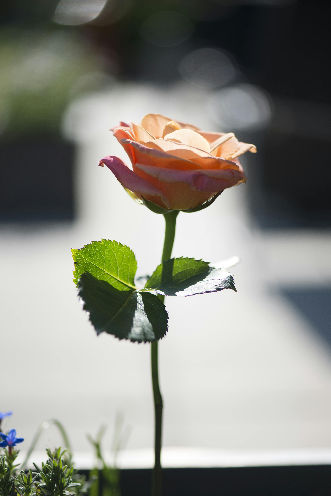

AMOUR
Deux coeurs, deux âmes.
Dans un coin de la vie au Maroc, deux âmes, Laila et Mustapha, se sont découvertes dans un tourbillon d'amour inattendu et vibrant. Leurs rencontres étaient comme des scènes de théâtre, où chaque sourire était une réplique dans une pièce où le thé à la menthe était l'acteur principal. Ensemble, ils parcouraient les rues labyrinthiques des médinas, s'aventuraient dans les souks bouillonnants, et se perdaient dans les paysages spectaculaires du désert ou des montagnes marocaines. Chaque instant était une performance où la richesse de leur culture se déployait dans toute sa splendeur, pour finir un jour sur un drame.


Acte premier
Aime moi, je t'aimerais
Dans l'effervescence d'une médina marocaine, où les senteurs épicées se mêlent aux éclats de rire des passants, Laila, une jeune femme au regard pétillant, croisa le chemin de Mustapha, un homme au charisme solaire. Leurs regards se rencontrèrent par hasard dans un café traditionnel, où les volutes de thé à la menthe flottaient délicatement dans l'air. Un sourire timide s'échangea entre eux, tel un prélude à une histoire encore inconnue.
Au fil des rencontres fortuites, leurs échanges se firent plus profonds, révélant des aspirations communes et des rêves partagés. Les ruelles étroites de la médina devinrent le théâtre de leurs déambulations complices, où chaque coin de rue cachait un secret à découvrir ensemble. Entre les éclats de rire et les moments de complicité, un lien indéniable se tissa entre eux, un lien fait d'émotions pures et de promesses silencieuses.
Acte second
Et les corps s'entrelacent
Dans la chaleur du crépuscule, Laila et Mustapha se retrouvèrent dans un coin paisible de la médina, échappant aux regards curieux pour savourer un moment intime. Sur un tapis berbère, ils se tenaient main dans la main, leurs silhouettes se découpant contre le ciel teinté d'or et de pourpre. Leurs yeux se trouvèrent dans un échange muet chargé de promesses, tandis que le crépitement de la ville se fondait en une symphonie lointaine.
Mustapha brisa le silence, sa voix douce comme une caresse, exprimant les émotions qui débordaient de son cœur. Laila le regarda avec une tendresse infinie, captivée par chaque mot, chaque geste. Et alors que le soleil s'abaissait lentement à l'horizon, leurs lèvres se rencontrèrent dans un baiser empreint de passion et de douceur, scellant leur amour dans l'éclat fugace mais éternel de ce moment magique.
Acte dernier
Et un enfant, une fin ?
Dans les jours qui suivirent leur moment intime, Laila et Mustapha furent confrontés à une réalité cruelle. Une nouvelle inattendue bouleversa leur existence déjà fragile : Laila était enceinte. La joie fugace laissa place à la peur et à l'incertitude, alors qu'ils réalisaient les conséquences de leur passion impétueuse. Incapables d'assumer la responsabilité d'un enfant hors mariage dans une société rigide, ils prirent la douloureuse décision de se séparer, leur amour se brisant sous le poids du dilemme.
Dans un ultime acte de désespoir, Laila et Mustapha abandonnèrent leur enfant, confiant son destin incertain aux caprices de la vie. Leur cœur lourd de chagrin, ils se quittèrent dans un silence chargé d'adieux non-dits, emportant avec eux le fardeau de leurs choix impossibles. Leurs chemins se séparèrent, mais le poids de leur décision les hanterait à jamais, marquant à jamais leur histoire d'une tragédie indélébile.
En réalité
Des valeurs et des règles
Au Maroc, les enfants nés hors mariage sont souvent confrontés à des réalités tragiques, comme l'abandon. En raison de la stigmatisation sociale et des difficultés économiques, certains de ces enfants sont abandonnés à la naissance ou peu de temps après. Privés de soins et de soutien familial, ils peuvent se retrouver livrés à eux-mêmes, exposés aux dangers des rues et à l'exploitation. Bien que des efforts soient déployés pour leur venir en aide, le problème persiste, soulignant la nécessité de renforcer les systèmes de soutien aux familles vulnérables au Maroc.
Decouvrons les faits ...